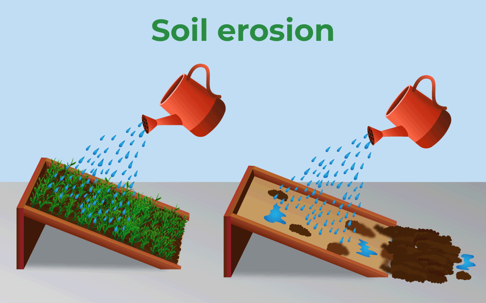
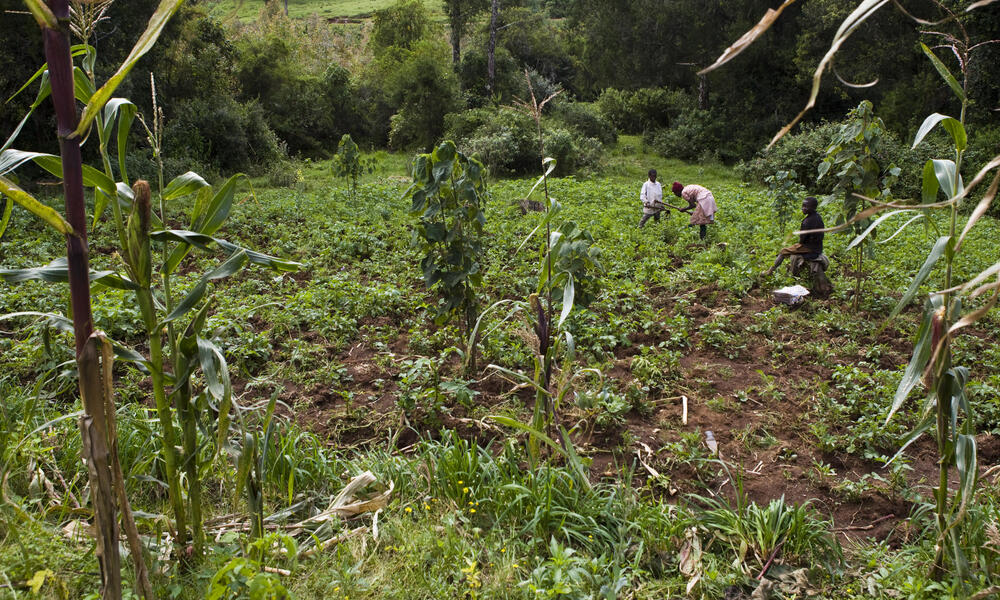

Welcome to our website dedicated to the urgent issue of soil erosion. Our planet's soil is one of its most precious resources, yet it is under constant threat from erosion caused by human activities and natural forces. Soil erosion can have devastating effects on our environment, from reduced crop yields and degraded land to increased pollution and even flooding.

About Us
At our website, we are committed to raising awareness about soil erosion and providing practical solutions for individuals, farmers, and policymakers to help combat this problem. Through education, advocacy, and community engagement, we believe that we can make a real difference in protecting our planet's soil for generations to come.
We invite you to explore our resources, learn about the impacts of soil erosion, and discover ways that you can get involved in this critical effort. Together, we can work towards a sustainable future and a healthier planet.
Introduction
Soil erosion is the natural or human-induced process of the displacement or removal of soil particles from their original location by wind, water, ice, or other environmental factors, which can lead to the loss of topsoil, reduced soil fertility, decreased crop yields, and environmental degradation.
There are several types of soil erosion, including sheet erosion, rill erosion, and gully erosion, each with varying degrees of severity. Soil erosion can have serious negative impacts on both the environment and human societies.
The loss of fertile topsoil can lead to reduced crop yields, increased desertification, and loss of biodiversity. It can also cause sedimentation in waterways, leading to decreased water quality and increased risk of flooding. Soil erosion is often the result of human activities such as deforestation, overgrazing, and poor land use practices.
There are several types of soil erosion, including sheet erosion, rill erosion, and gully erosion, each with varying degrees of severity. Soil erosion can have serious negative impacts on both the environment and human societies.
The loss of fertile topsoil can lead to reduced crop yields, increased desertification, and loss of biodiversity. It can also cause sedimentation in waterways, leading to decreased water quality and increased risk of flooding. Soil erosion is often the result of human activities such as deforestation, overgrazing, and poor land use practices.

Causes of soil erosion
DEFORESTATION
Without plant cover, erosion can occur and sweep the land into rivers. The agricultural plants that often replace the trees cannot hold onto the soil and many of these plants, such as coffee, cotton, palm oil, soybean and wheat, can actually worsen soil erosion. And as land loses its fertile soil, agricultural producers move on, clear more forest and continue the cycle of soil loss.
OVERGRAZING
The conversion of natural ecosystems to pasture land doesn’t damage the land initially as much as crop production, but this change in usage can lead to high rates of erosion and loss of topsoil and nutrients. Overgrazing can reduce ground cover, enabling erosion and compaction of the land by wind and rain.. This reduces the ability for plants to grow and water to penetrate, which harms soil microbes and results in serious erosion of the land.
USE OF AGROCHEMICALS
Pesticides and other chemicals used on crop plants have helped farmers to increase yields. Scientists have found that overuse of some of these chemicals changes soil composition and disrupts the balance of microorganisms in the soil. This stimulates the growth of harmful bacteria at the expense of beneficial kinds
CONSTRUCTION ACTIVITIES
Construction activities remove natural vegetation that protects the soil and can cause soil disturbance during excavation and grading. This can result in soil erosion by wind, rain, and runoff and can lead to sediment and pollutant runoff into waterways. Erosion control measures and proper land use planning are necessary to minimize the negative impacts of construction on soil erosion.
MINING ACTIVITIES
Mining activities cause soil erosion by removing natural vegetation cover, disturbing the soil, and altering the landscape and drainage patterns. The runoff from mining sites can contain high levels of sediment and pollutants that can negatively impact nearby waterways and ecosystems. Proper reclamation and rehabilitation practices, along with erosion and sediment control measures, are necessary to mitigate the impacts of mining on soil erosion
CLIMATE CHANGE
Climate change can cause soil erosion by altering precipitation patterns and increasing the frequency and intensity of extreme weather events. This can lead to soil loss through increased runoff and flooding, as well as soil degradation and increased vulnerability to erosion by wind. Additionally, climate change can exacerbate other causes of soil erosion, such as deforestation and unsustainable land use practices. To mitigate the impacts of climate change on soil erosion, sustainable land management practices and measures to reduce greenhouse gas emissions are necessary.

Impacts of soil erosion
The loss of fertile soil makes land less productive for agriculture, creates new deserts, pollutes waterways and can alter how water flows through the landscape, potentially making flooding more common.
LOSS OF ARABLE LAND
Arable land is any land that can be used to grow crops. Many of the practices used in growing those crops can lead to the loss of topsoil and destruction of soil characteristics that make agriculture possible
CLOGGED AND POLLUTED WATERWAYS
Soil eroded from the land, along with pesticides and fertilizers applied to fields, washes into streams and waterways. This sedimentation and pollution can damage freshwater and marine habitats and the local communities that depend on them.
INCREASED FLOODING
Land is often transformed from a forest or other natural landscape, such as floodplains and wetlands, into a crop field or pasture. The converted land is less able to soak up water, making flooding more common. There are methods to improve soil water holding capacity as well as restoration and maintenance of wetlands.
LOSS OF ARABLE LAND
Arable land is any land that can be used to grow crops. Many of the practices used in growing those crops can lead to the loss of topsoil and destruction of soil characteristics that make agriculture possible
CLOGGED AND POLLUTED WATERWAYS
Soil eroded from the land, along with pesticides and fertilizers applied to fields, washes into streams and waterways. This sedimentation and pollution can damage freshwater and marine habitats and the local communities that depend on them.
INCREASED FLOODING
Land is often transformed from a forest or other natural landscape, such as floodplains and wetlands, into a crop field or pasture. The converted land is less able to soak up water, making flooding more common. There are methods to improve soil water holding capacity as well as restoration and maintenance of wetlands.
Steps to control soil erosion
Below are some common strategies for effective erosion control, many of which are part of the philosophy of regenerative agriculture. It’s worth noting that finding appropriate erosion-control treatments relies on understanding which specific erosion processes are at play.
BUILD SOIL ORGANIC MATTER:
To be healthy, soil needs just the right mixture of water, air, minerals, and organic matter. Soil organic matter, made up of decomposing plant and animal material, is the glue that helps bind soil together and keeps it anchored in place. Research suggests that increasing organic matter from 1 to 3 percent can reduce erosion by 20 to 33 percent because it increases the water-holding capacity of soil.
PLANT VEGETATION:
Trees, shrubs, hedgerows, and ground plants can block corrosive wind. Ensuring uninterrupted ground cover, such as through planting cover crops, also helps bind soil to roots.
USE EROSION CONTROL MATTING:
Also known as an erosion control blanket, this ground covering is often made of open-weave, biodegradable materials that shield the soil and provide support for growing vegetation on bare ground. This erosion control method is often effective for solar farms and construction sites where large areas are left barren and vulnerable to wind and water erosion.
USE GRAZING PRACTICES THAT REDUCE EROSION:
Rotational grazing is a method that moves livestock from one pasture paddock to the next. Each paddock gets a rest period and is allowed to regrow undisturbed, which minimizes soil compaction and erosion. Other beneficial practices include installing fencing and stream crossings to keep pastures safe from degradation.
BUILD SOIL ORGANIC MATTER:
To be healthy, soil needs just the right mixture of water, air, minerals, and organic matter. Soil organic matter, made up of decomposing plant and animal material, is the glue that helps bind soil together and keeps it anchored in place. Research suggests that increasing organic matter from 1 to 3 percent can reduce erosion by 20 to 33 percent because it increases the water-holding capacity of soil.
PLANT VEGETATION:
Trees, shrubs, hedgerows, and ground plants can block corrosive wind. Ensuring uninterrupted ground cover, such as through planting cover crops, also helps bind soil to roots.
USE EROSION CONTROL MATTING:
Also known as an erosion control blanket, this ground covering is often made of open-weave, biodegradable materials that shield the soil and provide support for growing vegetation on bare ground. This erosion control method is often effective for solar farms and construction sites where large areas are left barren and vulnerable to wind and water erosion.
USE GRAZING PRACTICES THAT REDUCE EROSION:
Rotational grazing is a method that moves livestock from one pasture paddock to the next. Each paddock gets a rest period and is allowed to regrow undisturbed, which minimizes soil compaction and erosion. Other beneficial practices include installing fencing and stream crossings to keep pastures safe from degradation.